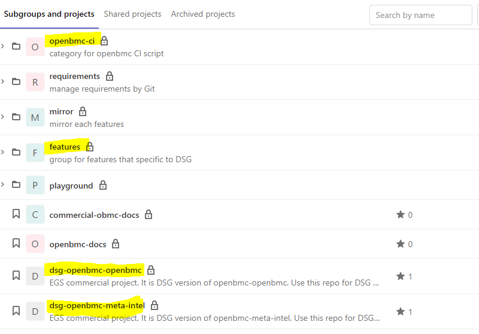
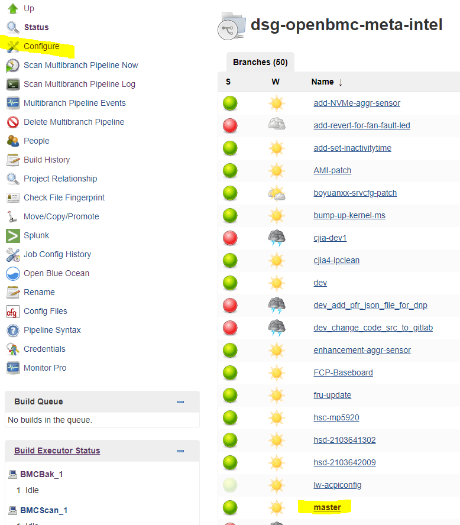
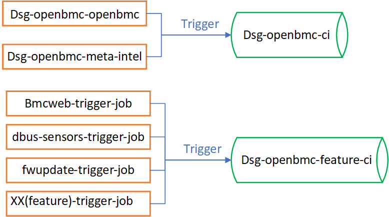
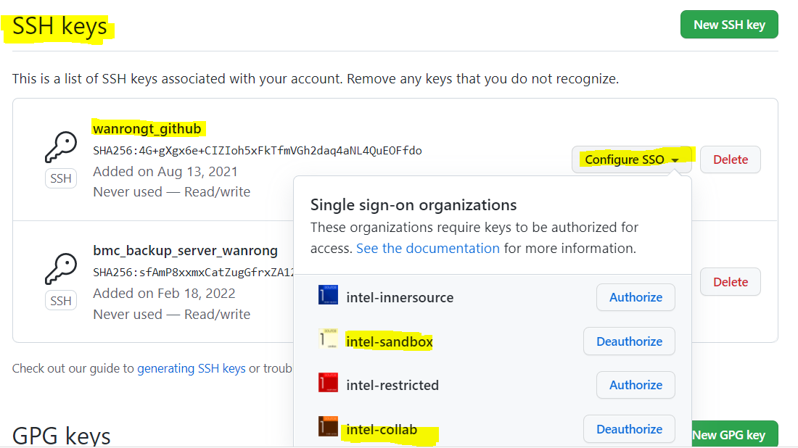

DSG BMC CI Process¶
Code repository — Gitlab¶
Openbmc is an open source project , and the DSG BMC project based on Openbmc is placed in gitlab. We mainly focus on four parts: dsg-openbmc-openbmc, dsg-openbmc-meta-intel, features and openbmc-ci. As shown in Fig1.
Dsg-openbmc-openbmc is obtained by clone of the Openbmc in github.
Dsg-openbmc-meta-intel is a project where developers create their own branches for feature development. Some git address links,not the actual code, are placed in the dsg-openbmc-meta-intel file. And the project code of features can be pulled by these links.
The project source code is put in the features project, and the code is classified in terms of the featrues.
Some Jenkinsfile are stored in the openbmc-ci project, and we can know the CI build process details by Jenkinsfile.

Fig1. Schematic diagram of the DSG BMC project structure in gitlab
##CI Build tool — Jenkins
DSG BMC CI tasks are deployed in Jenkins, and Jenkins provides multi-branch Pipeline for continuous integration and delivery, as shown in Fig2. The jobs executing CI build tasks are dsg-openbmc-ci and dsg-openbmc-feature-ci, which are automatically triggered by corresponding trigger job .
The trigger job corresponding to dsg-openbmc-ci are dsg-openbmc-openbmc and dsg-openbmc-meta-intel. And the trigger job corresponding to dsg-openbmc-feature-ci is xx(features name)-trigger-job.
 Fig2. Schematic diagram of each multibranch pipeline in Jenkins
Fig2. Schematic diagram of each multibranch pipeline in Jenkins
Take dsg-openbmc-meta-intel as an example, each branch is shown in fig3, 
Fig3
Related settings can be seen by clicking configure, the Project Repository is the corresponding git address, as shown in Fig4

Fig4
The build process is implemented by a custom pipeline script, as shown in Fig5. The pipeline also often uses the Jenkinsfile to implement build process , and the master branch of openbmc-ci uses Jenkinsfile, as shown in Fig6：
 Fig5
Fig5

Fig6
Build DSG BMC project¶
Trigger automatically build tasks by Jenkins¶
The dsg-openbmc-ci and dsg-openbmc-feature-ci have corresponding automatic trigger mode, and the trigger relationship diagram is shown in Fig7.
 Fig7
The two trigger modes of dsg-openbmc-ci:
When a developer pushes code or submits a merge request to the dsg-openbmc-openbmc and dsg-openbmc-meta-intel projects in gitlab, these changes will trigger the corresponding trigger-job in Jenkins, and the trigger-job will call dsg-openbmc-ci to build.
The master of openbmc-ci is triggered at 3 o’clock in the morning every day.
The two trigger modes of dsg-openbmc-feature-ci：
When a developer pushes code or submits a merge request to the fetures projects in gitlab, these changes will trigger the corresponding feature_name-trigger-job in Jenkins, and the trigger-job will call dsg-openbmc-ci to build.
The dsg-openbmc-feature-ci project will be executed regularly at 10 o’clock every day, and the results will be sent to Chunhui.
Trigger manually tasks by Jenkins¶
Take dsg-openbmc-feature-ci job as an example, click to select the master branch,
 Fig8
Fig8
Step1: Click the ‘Build with Parameters¶
Step2: Select the feature branch to be built in the Feature drop-down box, and fill in the branch name¶
Step3: Click the Build button to start the task¶

Build manually by command in the MobaXterm¶
step1: Set user permission¶
Create a user account (take jenkins as an example )
sudo useradd -d "/home/jenkins" -m -s "/bin/bash" jenkins
Set user password
sudo passwd jenkins
Set jenkins user sudo free password
sudo pkexec visudo
Add the following two lines, press Ctrl+o to save, Ctrl+x to exit:
jenkins ALL=(ALL) ALL jenkins ALL=(ALL) NOPASSWD:ALL
Step2:Set up agent¶
Set up system agent:
sudo vim /etc/environment
Add two lines to save：
export http_proxy=http://child-prc.intel.com:913
export https_proxy=http://child-prc.intel.com:913
Set up apt agent：
sudo vim /etc/apt/apt.conf
\## Add three lines to save：
Acquire::http::Proxy "http://child-prc.intel.com:913";
Acquire::ftp::proxy "http://child-prc.intel.com:913";
Acquire::https::proxy "http://child-prc.intel.com:913";
Step3: Installation tools¶
sudo apt-get -y update --fix-missing && apt-get -y install --no-install-recommends apt-utils 2>&1 && apt-get -y install cmake git lib32tinfo6 libicu[0-9][0-9] lsb-release net-tools ninja-build openjdk-8-jdk make p7zip-full procps python3 python3-pip python3-venv wget curl rsync iputils-ping chrpath texinfo cpio diffstat gawk locales --fix-missing && DEBIAN_FRONTEND=noninteractive apt-get -y install gcc g++ libkrb5-dev krb5-user uuid-dev libudev-dev libc6-dev libstdc++6 libstdc++-10-dev build-essential sqlite libsqlite3-dev libpcap-dev libssl-dev libsystemd-dev patchelf zip unzip vim dos2unix linux-headers-generic libelf-dev tree sudo md5deep mlocate && updatedb && locale-gen en_US.UTF-8 && update-locale && wget https://packages.microsoft.com/config/ubuntu/18.04/packages-microsoft-prod.deb -O packages-microsoft-prod.deb && dpkg -i packages-microsoft-prod.deb && apt-get -y update --fix-missing && apt-get -y install apt-transport-https dotnet-sdk-3.1 && python3 -m pip install --upgrade setuptools pip && apt-get autoremove -y && apt-get clean -y && rm -rf /var/lib/apt/lists/*
Step4: Set up git agent¶
git config --global http.proxy http://child-prc.intel.com:913
git config --global https.proxy http://child-prc.intel.com:913
git config -l
Step5: Create a gitlab secret key¶
Create key
ssh-keygen -t rsa -C " Email Address "
Copy the public key to gitlab
cat .ssh/id_rsa.pub
Open gitlab, paste the public key in ‘setting->SSH keys’ and save

SSH login without confirmation configuration (*Required, otherwise the feature code will not be pulled when building)
vim ~/.ssh/config
Host *
StrictHostKeyChecking no
UserKnownHostsFile /dev/null
Step6:Build image¶
clone code
cd ~ git clone https://gitlab.devtools.intel.com/dsg-bmc/dsg-openbmc-openbmc.git git clone https://gitlab.devtools.intel.com/dsg-bmc/dsg-openbmc-meta-intel.git mv dsg-openbmc-openbmc openbmc mv dsg-openbmc-meta-intel openbmc/openbmc-meta-intel
create workspace
cd /home/jenkins/openbmc/ export TEMPLATECONF=/home/jenkins/openbmc/openbmc-meta-intel/meta-egs/conf/ source oe-init-build-env
Modify the thread to speed up the build
vim ~/jenkins/openbmc/build/conf/local.conf
#Add the following two lines：
BB_NUMBER_THREADS ?= "16"
PARALLEL_MAKE ?= "-j16"
build command，Remember to clear the openbmc/build/download folder cache before each build and execute the build command
cd ~/jenkins/openbmc/build
time bitbake intel-platforms
After the build is successful, the image is placed under the path: ~/openbmc/build/tmp/deploy/images/intel-ast2600/pfr_images
View the build result¶
① Take dsg-openbmc-ci as an example, you can see the build result on the branch interface, green dot means success, red dot means failure
 ② Select the master branch, you can see the build history and the operation of each stage, and select the most recent running process in the build history
② Select the master branch, you can see the build history and the operation of each stage, and select the most recent running process in the build history
 ③ Click ‘Open Blue Ocean’ icon to see the detailed process of the build, click the icon in the lower right corner to see the log
③ Click ‘Open Blue Ocean’ icon to see the detailed process of the build, click the icon in the lower right corner to see the log
 ④ If the build fails, analyzethe reason from the log
④ If the build fails, analyzethe reason from the log

Find the image¶
###Step1:Select a certain submission of dag-openbmc-meta-intel branch in the gitlab, such as Move DC power on/off log to currrentPowerStateMonitor Committed by Rao, Xinglong

Step2: Click the address behind the pipeline: #5287140
 Step3:Click on the ‘buildci’ icon
Step3:Click on the ‘buildci’ icon
 Step4:Open the website search in the picture and find the corresponding zip file to download
Step4:Open the website search in the picture and find the corresponding zip file to download